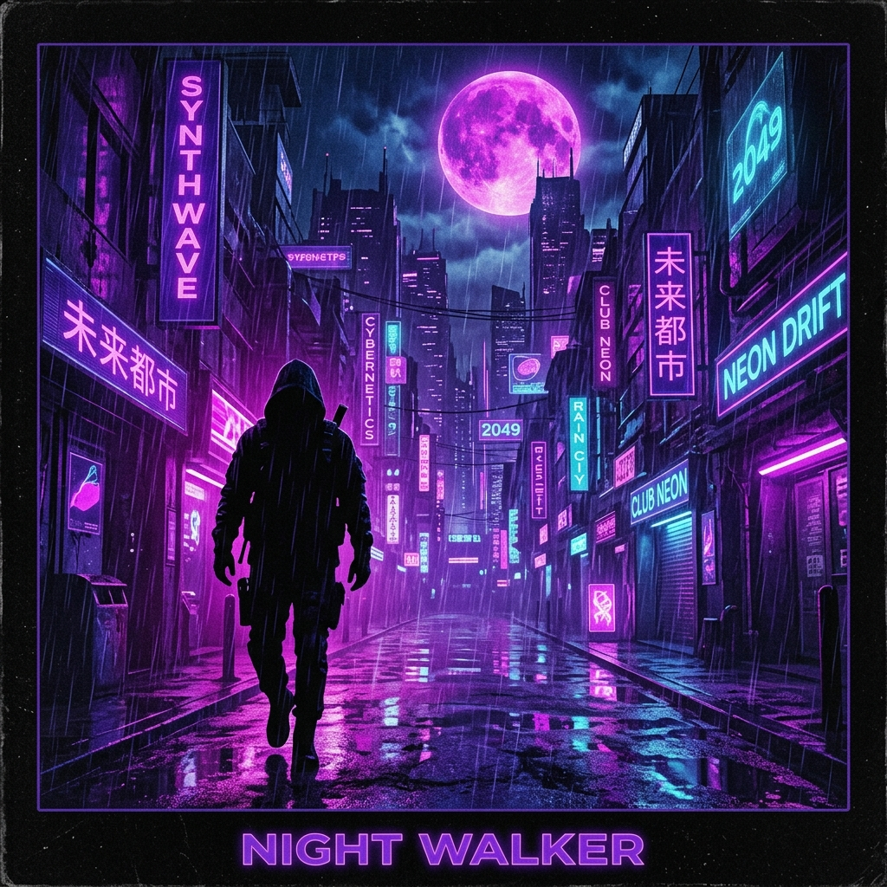

Hyprland Controls
Gaps In
10
Gaps Out
20
Border Size
2
Border
Round Corners
Floating Switch
Mod + Shift + Space
Focus Follows Mouse
Center New Windows
Hyprland v0.41.2

After Dark
Mr.Kitty
1:08
4:47
System Overview
Hardware
CPU
AMD Ryzen 5 5600X
23%
RAM
6.1 GiB / 15.5 GiB
39%
GPU
NVIDIA RTX 3060
18%
Storage
/ (Root)
45.2 GiB / 100 GiB
45%
/home
212 GiB / 512 GiB
41%
Network
Download
4.2 KiB/s
Upload
1.1 KiB/s
System
OSArch Linux x86_64
Kernel6.8.9-arch1-1
Uptime2h 34m
Packages1247 (pacman)
Shellzsh 5.9
WMHyprland